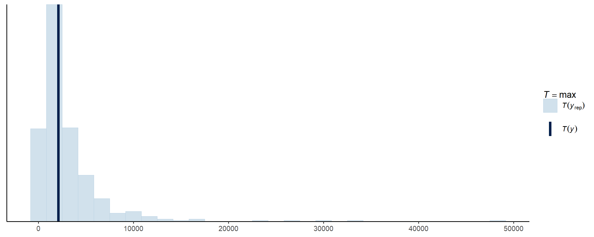

Linked zero-inflation
linked-zero-inflation.RmdCase study - Sebastes proriger vs. water temperature
2015 data for Sebastes proriger (redstripe rockfish).
data(redstripe)
redstripe## # A tibble: 2,330 × 13
## trawl_id lat lng depth date area_swept do temp sal total_kg
## <dbl> <dbl> <dbl> <dbl> <date> <dbl> <dbl> <dbl> <dbl> <dbl>
## 1 2.01e11 34.0 -120. 57 2012-07-14 1.70 4.58 12.5 33.6 0
## 2 2.01e11 37.8 -123. 57.2 2010-06-26 1.34 2.01 8.92 34.0 0
## 3 2.01e11 37.8 -123. 57.6 2012-06-30 1.70 1.03 8.50 34.0 0
## 4 2.01e11 34.6 -121. 58.6 2008-10-21 1.40 3.95 11.9 33.6 0
## 5 2.01e11 33.9 -119. 58.6 2013-07-20 1.51 3.10 10.5 33.6 0
## 6 2.01e11 35.1 -121. 59.1 2010-10-06 1.48 2.69 11.0 33.6 0
## 7 2.01e11 37.7 -123. 59.2 2013-06-29 1.55 0.819 8.71 34.0 0
## 8 2.01e11 34.2 -119. 59.3 2011-10-11 1.67 4.11 11.2 33.4 0
## 9 2.01e11 42.0 -124. 59.4 2010-09-16 1.57 2.39 8.55 33.8 0
## 10 2.01e11 40.8 -124. 59.4 2010-06-22 1.63 2.01 7.28 34.0 0
## # ℹ 2,320 more rows
## # ℹ 3 more variables: cpue_kg <dbl>, total_count <dbl>, cpue_count <dbl>A. Specify initial model
\[ \begin{aligned} y_n &\sim \text{ZINBL}\left[\mu_n = \text{Modskurt}(x_n), \kappa, \pi_n\right] \\ \pi_n &= \gamma_0 - \gamma_1 \cdot \mu_n \end{aligned} \]
with parameters:
\[ \begin{align} \kappa &\sim \text{Exponential}(0.5) \\ \gamma_0 &\sim \text{Normal}(3.0, 1.5) \\ \gamma_1 &\sim \text{HalfNormal}(3.0) \end{align} \]
spec <-
mskt_spec(data = redstripe,
# by including effort below, we are atually modelling catch per unit
# effort (CPUE) while retaining the discrete distribution of these
# count data
y = c('Sebastes proriger (CPUE)' = 'total_count'),
x = c('SST (°C)' = 'temp'),
effort = c('Area swept (ha)' = 'area_swept'),
dist = 'zinbl',
shape = 'rdp',
subset_prop = 0.3)
str(spec$subset())## List of 4
## $ train:List of 10
## ..$ y : int [1:699] 0 0 0 0 0 0 0 0 0 0 ...
## ..$ x : num [1:699] 7.49 11.78 7.01 6.45 11.05 ...
## ..$ eff : num [1:699] 1.4 1.69 1.44 1.64 1.66 ...
## ..$ N : int 699
## ..$ Nz : int 673
## ..$ x_range : num 7.18
## ..$ x_pos_range: num 1.82
## ..$ x_min : num 5.5
## ..$ x_pos_min : num 6.28
## ..$ y_max : int 2124
## $ all :'data.frame': 2330 obs. of 4 variables:
## ..$ y : int [1:2330] 0 0 0 0 0 0 0 0 0 0 ...
## ..$ x : num [1:2330] 12.45 8.92 8.5 11.85 10.51 ...
## ..$ eff: num [1:2330] 1.7 1.34 1.7 1.4 1.51 ...
## ..$ set: chr [1:2330] "train" "test" "train" "train" ...
## $ prop : num 0.3
## $ seed : NULLB. Verify initial model specification
Prior probabilities of parameter values
check_prior_dens(spec)TODO: add legend for median, 50%HDI and 99% line!

Prior predictions for probability of excess zero \(\pi\)
check_prior_zero(spec)OPTIONAL: refine model spec further
C. Fit subset model
fit_subset <-
mskt_fit(spec,
use_subset = TRUE,
iter_warmup = 200,
iter_sampling = 100,
chains = 6,
parallel_chains = 6,
# debug_init = TRUE,
show_messages = TRUE, show_exceptions = TRUE)
check_computation(fit_subset)## spec: zinbl[Hmsrdp] using 699 obs out of 2330 (30% sample)
## post: 6 chains each with 100 draws (600 total)## $summary
## # A tibble: 9 × 10
## variable mean median sd mad q5 q95 rhat ess_bulk
## <chr> <num> <num> <num> <num> <num> <num> <rhat> <ess>
## 1 H 277. 221. 194. 130. 94.7 657. 1.02 203 (0.3)
## 2 m 6.70 6.67 0.200 0.201 6.40 7.07 1.05 101 (0.2)
## 3 s 0.389 0.348 0.172 0.156 0.168 0.712 1.03 182 (0.3)
## 4 r 0.672 0.704 0.191 0.199 0.317 0.934 1.02 242 (0.4)
## 5 d 2.65 1.98 2.18 1.58 0.449 7.07 1.02 197 (0.3)
## 6 p 1.07 1.07 0.515 0.653 0.246 1.85 1.02 335 (0.6)
## 7 kap 2.10 2.08 0.238 0.233 1.74 2.55 1.01 282 (0.5)
## 8 g0[1] 3.94 3.89 0.345 0.359 3.42 4.51 1.04 171 (0.3)
## 9 g1[1] 1.05 1.05 0.276 0.291 0.596 1.50 1.04 161 (0.3)
## # ℹ 1 more variable: ess_tail <ess>
##
## $diagnostics
## chain_id warmup sampling total num_divergent num_max_treedepth ebfmi
## 1 1 6.001 2.660 8.661 2 0 0.8508828
## 2 2 5.811 2.454 8.265 1 0 1.1861269
## 3 3 4.542 2.105 6.647 5 0 1.0944825
## 4 4 4.674 1.789 6.463 18 0 0.9643593
## 5 5 6.072 2.898 8.970 2 0 1.0613385
## 6 6 6.250 2.338 8.588 1 0 0.8744557OPTIONAL: refine model spec or fit parameters
Check subset model
# visual display of chain mixing and prior-data conflicts
check_post_dens(fit_subset, by_chain = TRUE)
# uses test set for discrete pit
check_post_calibration(fit_subset)The slight increase suggests the model is struggling to capture overdispersion in the upper quantiles of data. However it appears well-calibrated for the rest of the dist? Compare with a NB model.
OPTIONAL: refine model spec or fit parameters
D. Fit full model
fit_full <-
mskt_fit(spec,
chains = 4,
parallel_chains = 4,
# sparse data can require a little more computing care
# default is 0.80
# adapt_delta = 0.90,
# for testing
debug_init = FALSE, show_messages = TRUE, show_exceptions = TRUE)
check_computation(fit_full)## spec: zinbl[Hmsrdp] using 2330 obs out of 2330 (100% sample)
## post: 4 chains each with 1000 draws (4000 total)## $summary
## # A tibble: 9 × 10
## variable mean median sd mad q5 q95 rhat ess_bulk
## <chr> <num> <num> <num> <num> <num> <num> <rhat> <ess>
## 1 H 864. 792. 343. 257. 476. 1484. 1 3132 (0.8)
## 2 m 6.61 6.60 0.148 0.157 6.39 6.87 1 1651 (0.4)
## 3 s 0.544 0.513 0.160 0.135 0.346 0.844 1 1998 (0.5)
## 4 r 0.795 0.822 0.135 0.132 0.527 0.962 1 1703 (0.4)
## 5 d 1.86 1.70 0.943 0.852 0.596 3.57 1 1890 (0.5)
## 6 p 0.796 0.693 0.533 0.611 0.106 1.76 1 2598 (0.6)
## 7 kap 2.33 2.32 0.145 0.144 2.10 2.57 1 3055 (0.8)
## 8 g0[1] 4.40 4.39 0.251 0.255 4.01 4.83 1 2288 (0.6)
## 9 g1[1] 1.21 1.21 0.190 0.189 0.908 1.53 1 2271 (0.6)
## # ℹ 1 more variable: ess_tail <ess>
##
## $diagnostics
## chain_id warmup sampling total num_divergent num_max_treedepth ebfmi
## 1 1 68.736 57.969 126.705 24 0 0.9714918
## 2 2 62.473 66.268 128.741 18 0 0.9745719
## 3 3 56.298 70.405 126.703 13 0 0.9514785
## 4 4 57.881 71.181 129.062 24 0 1.0103720OPTIONAL: refine model spec or fit parameters
Check full model
check_post_dens(fit_full, by_chain = TRUE)
# can be slow for large N
check_post_influencers(fit_full)## pareto_khat Sebastes proriger (CPUE) SST (°C) Area swept (ha)
## log_lik[1723] 0.50 0 9.2 1.7
## log_lik[1986] 0.55 0 6.4 1.9
## log_lik[2287] 0.69 0 6.3 1.8
## log_lik[2330] 1.63 0 6.1 1.5OPTIONAL: refine model spec or fit parameters.
E. Use the model
Plot summaries of the abundance distribution
# plot the distribution of abundance along the gradient
abundance_dist(fit_full,
include_zero_inflation = FALSE,
summaries = c('mean')) +
scale_y_sqrt()Calculate ranges of x for different percentages of abundance measures
abundance_range(fit_full,
capture_pct = 50,
using_range = 'HAZ',
based_on = 'mean',
include_zero_inflation = FALSE,
plotted = TRUE) +
labs(subtitle = '50% of highest mean counts') +
scale_y_sqrt()##
## Species range (see x.avg row) calculated as the (averaged across posterior draws):
## left centre right
## mean.avg 670.44891756 904.81914000 474.51893029
## mean.se 49.18261339 53.03304984 27.64652351
## x.avg 6.33893171 6.61184220 7.51756997
## x.se 0.02492162 0.01915691 0.02178029